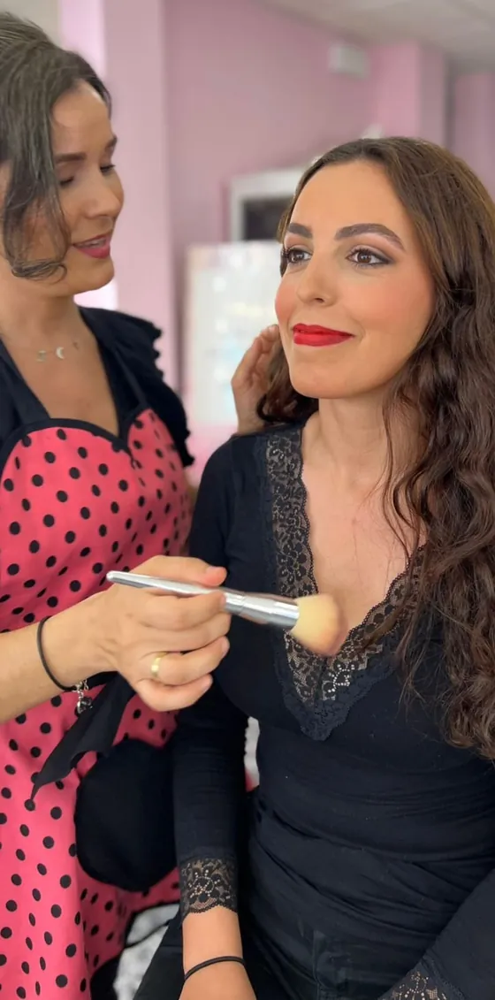
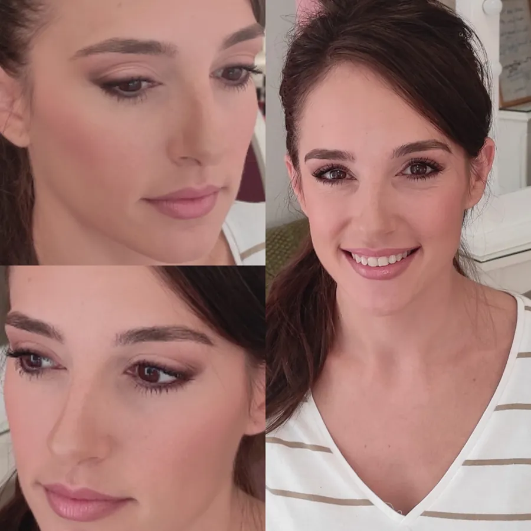
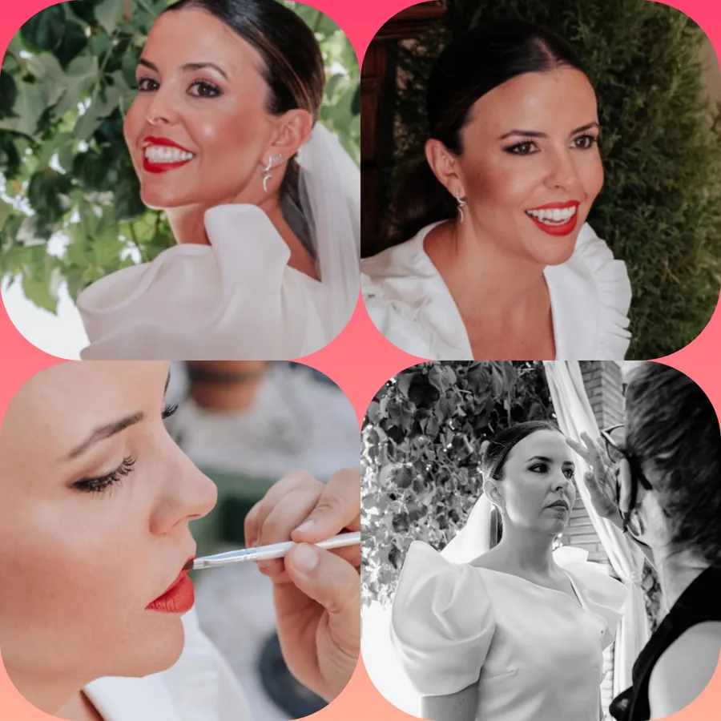

Cejas y maquillaje en el centro de Córdoba
Soy Marta de la Coba. Antes de proponerte un microblading, intento que te vuelva a crecer tu propia ceja.
Antes y después
Fotos de mis clientas, como las publico. Arrastra para comparar.

 AntesDespués
AntesDespués
 AntesDespués
AntesDespuésLabios

 AntesDespués
AntesDespués
 AntesDespués
AntesDespués
 AntesDespués
AntesDespués
 AntesDespués
AntesDespués
 AntesDespués
AntesDespués
Maquillaje para bodas y eventos
Sobre todo los fines de semana, en el estudio o en tu casa.


Diseña tu ceja
Elige tu rostro, tu color y cómo las tienes hoy. Arrastra para comparar.
Rostro ovalado: una ceja de arco suave y de grosor medio, con pelo castaño. Hoy las tienes con huecos.
Mandarle mi diseño a MartaLo habitual y lo que hago yo, mes a mes
Con unas cejas finas o con huecos.
MicrobladingSegunda sesión y repasoDepilaciónMicroblading, solo si quedan huecos
Así vuelve a salir
Pasa los meses o deja que corra solo.
Ya tienes la ceja hecha con tu propio pelo.
Ilustración¿Puedes hacerte microblading?
Marca lo que tengas. Es la lista del consentimiento que se firma antes.
Lo que dicen mis clientas
4,6 ★ en Google · ver las 14 opiniones
«Se ha convertido en mi centro de confianza, se nota la experiencia y profesionalidad.»
«Mi sitio de confianza, me las deja fantásticas.»Aurora González · Google
«Trato atento, profesional y personalizado.»Montserrat DTP · Google
Servicios
1 h Curso de automaquillaje, tú sola. Ver
Preguntas frecuentes
¿Siempre hace falta el microblading?
No. Primero dejo que tu ceja recupere su forma y densidad, con depilaciones mensuales. Solo si en un año no vuelve, pasamos al microblading.
¿Cuánto dura el microblading?
Entre 6 y 20 meses, según tu piel, tu edad y el sol. Luego conviene retocarlo.
¿Queda natural?
Son trazos manuales, pelo a pelo, con un pigmento elegido según el tono de tu vello y de tu piel.
¿Quién no puede hacérselo?
Está contraindicado con epilepsia, eccemas, enfermedades autoinmunes, VIH, hepatitis, problemas cardiovasculares o de cicatrización, toxina botulínica reciente o anticoagulantes. Ante la duda, consulta con tu médico.
¿Qué cuidados hay que tener después?
Evitar el sol prolongado, no mojar las cejas los primeros días y usar los productos de cuidado que te recomiende.
¿Hay que pedir cita?
Sí. Escríbeme por WhatsApp y te busco un hueco.
¿Vas a domicilio?
Sí, sobre todo para maquillaje de eventos.
Dónde estoy
- Dirección
- C. Rodríguez Sánchez, 14 · 14003 Córdoba
- Horario
- pendiente de confirmar
- 629 06 74 27
- @martadelacoba_

Pide cita por WhatsApp
Mándame una foto de tus cejas con luz natural y te digo qué haría.